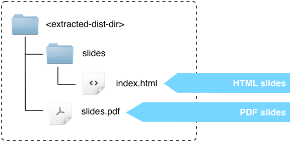
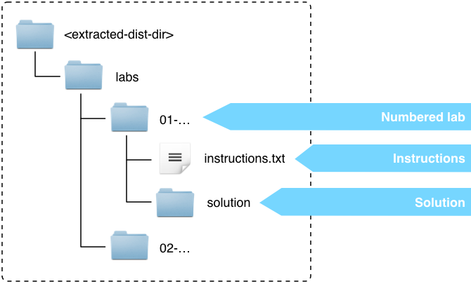
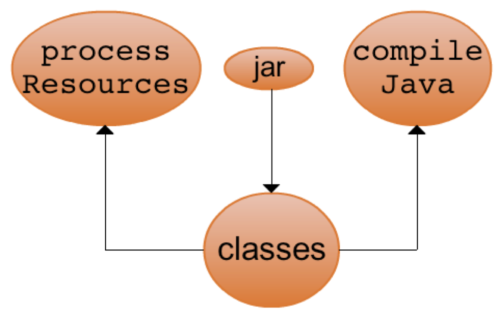
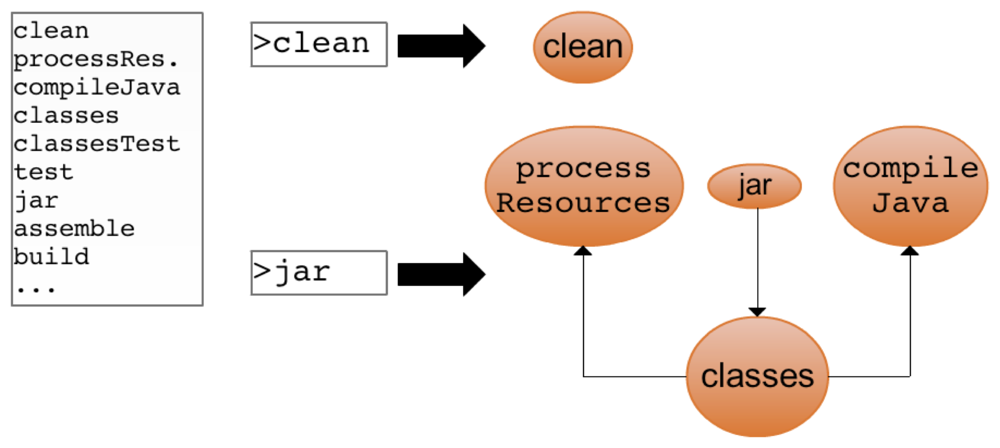
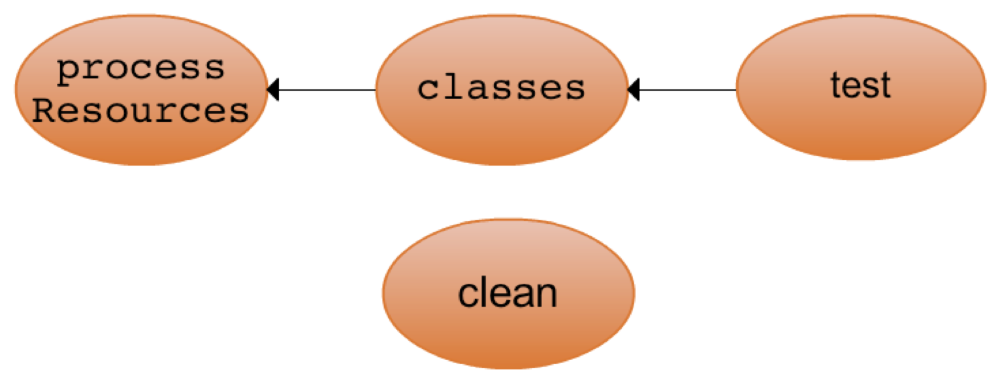
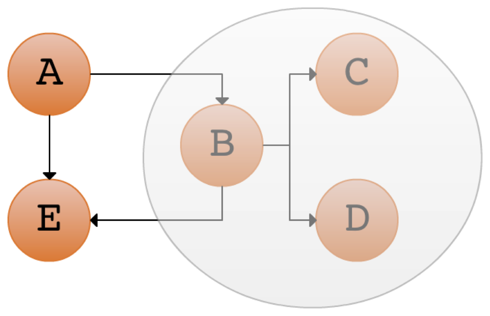

In-depth with Gradle for Java projects


Proficiency as a Gradle build master.
Understanding of:
Being able to methodically create Gradle builds, rather than just adapting examples.
And more.
We encourage you to generate a build scan if you have a problem with a lab, so we can help you solve your problem. Just run your build with -Dscan.
01-create-build-scan
// << is synonymous with doLast()
// we'll use doLast() from here on
task hello << { println "Hello" }
// access existing task via its name
hello.dependsOn otherTask
// configure existing task via closure
hello {
dependsOn otherTask
}
// configure new task
task greet {
dependsOn otherTask
doLast { println "Hello Gradler!" }
}What does each individual line do?
task whatAmIDoing
whatAmIDoing
tasks.whatAmIDoing
whatAmIDoing {}
whatAmIDoing << {}task hello {
onlyIf { day == "monday" }
doFirst { println "Hello" }
}Ad-hoc tasks implementations are written in the build script using doLast() or doFirst().
task copy(type: Copy) {
from "someDir"
into "anotherDir"
}Typed tasks are configured in the build script. Implementation is provided by the Copy class.
DefaultTask@org.gradle.api.tasks.TaskActionclass FtpTask extends DefaultTask {
String host = "docs.mycompany.com"
@TaskAction
void ftp() {
// do something complicated
}
}Prefer implementing task types to implementing ad-hoc tasks.
Ad-hoc tasks are OK for small simple tasks.
02-custom-tasks

Before execution phase, Gradle arranges tasks into execution graph.
Known as a Directed Acyclic Graph (DAG).
Running: "gradle clean jar"


//'build' task runs only once:
> gradle build build
//'classes' task runs only once:
> gradle clean classes test
//'classes' task runs twice:
> gradle clean classes; gradle test03-task-graph
The order that tasks are executed in can be optimized.
task unitTests {}
task integrationTests {
mustRunAfter unitTests
// or: shouldRunAfter unitTests
}Without instruction, task order is undefined.
Runs a task even if a preceding task has failed.
task startWebServer {}
task stopWebServer {}
task integrationTests {
dependsOn startWebServer
finalizedBy stopWebServer
}Often used for releasing resources (cf. Java's try-finally).
04-order-and-finalize
> gradle A -x B
gradle.startParameter.excludedTaskNames.add "jar"myTask.onlyIf { hasDocTaskGeneratedTitle() }if (isReleaseManagerUser()) {
task ftpDistribution {
doLast {
// do something
}
}
}05-excluding-tasks
gradle.taskGraph.whenReady { graph ->
if (graph.hasTask(":release")) {
if (!project.hasProperty("releaseUsername")) {
throw new GradleException("releaseUsername is not set")
}
}
}
task someTask {
doLast {
if (gradle.taskGraph.hasTask(":otherTask")) {
// do something
}
}
}
// What happens here?
println gradle.taskGraph.allTasks06-using-the-task-graph
Create tasks on demand, usually by naming patterns.
tasks.addRule("Pattern: ping<ID>") { String taskName ->
if (taskName.startsWith("ping")) {
task(taskName) {
doLast {
println "Pinging: " + (taskName - "ping")
}
}
}
}
task groupPing {
dependsOn pingServer1, pingServer2
}Used to provide dynamic upload, build and clean tasks.
Shown at the bottom of gradle tasks output.
error, quiet, warning, lifecycle, info, debuglifecycle) is minimalistic> gradle -i hello
> gradle hello -d
> gradle -q helloWhen troubleshooting, info level is usually the most useful.
The debug level has a lot of output.
Project and Task objects come with a logger.
println "A message logged at QUIET level"
logger.quiet "A message that is always logged."
logger.error "An error log message."
logger.warn "A warning log message."
logger.lifecycle "A lifecycle log message."
logger.info "An info log message."
logger.debug "A debug log message."
task myTask {
doLast {
logger.info "Doing cool stuff…"
}
}import org.gradle.api.logging.Logger
import org.gradle.api.logging.Logging
Logger logger = Logging.getLogger("some-logger")
logger.info("An info log message")Standard Gradle types expose a logger (e.g. Task.getLogger())
Log messages from other logging toolkits are picked up:
Plugins are just packaged build logic.
Plugins can do anything that you can do in a build script, and vice versa.
Plugins aid:
Some of the things plugins typically do:
sourceSets)Plugins can be implemented as scripts or classes.
Plugin interface.Plugins typically apply to the Project object, but not necessarily.
Plugins are applied using the Project.apply() method.
Script plugins are trivially easy to write and consume.
myPlugin.gradle:
task taskFromPlugin() {
doLast { println "added by a script plugin!" }
}build.gradle:
apply from: "myPlugin.gradle"Relative file paths are resolved relative to the applying project.
Script plugins can be sourced over HTTP.
apply from: "http://my.org/gradle-scripts/awesome-features-1.0.gradle"These scripts are not cached. If the URL is not accessible, your build will fail.
Binary plugins are implementations of the Plugin interface.
package org.foo.plugins
class MyPlugin implements Plugin<Project> {
void apply(Project project) {
Task myTask = project.tasks.create("myTask")
myTask.doLast {
println "added by a binary plugin!"
}
}
}Typically compiled and reused via JARs. (Adding plugin JARs to the classpath will be covered later.)
Apply via their class instance…
apply plugin: org.foo.plugins.MyPluginOr via their plugin ID:
apply plugin: "org.foo.my-plugin"It's harmless to apply the same plugin multiple times (i.e. application is idempotent).
Plugin types are mapped to IDs by searching the classpath for a conventional properties file.
build script:
apply plugin: "org.foo.my-plugin"META-INF/gradle-plugins/org.foo.my-plugin.properties:
implementation-class=org.foo.plugins.MyPluginName is: META-INF/gradle-plugins/«plugin id».properties
Gradle ships with many useful plugins.
Some examples:
java - compile, test, package, upload Java projectscheckstyle - static analysis for Java codemaven - uploading artifacts to Apache Maven repositoriesscala - compile, test, package, upload Scala projectsidea and eclipse - generates metadata so IDEs understand the projectapplication - support packaging your Java code as a runnable applicationMany more, listed in the Gradle User Guide.
Plugins can build upon other plugins. This is a common pattern.
base plugin provides generic capabilitiesExample:
java-base plugin adds the "source set" capabilityjava plugin adds a main and test source set (and other defaults)Allows users to back out of conventions if they don't suit.
class JavaPlugin implements Plugin<Project> {
void apply(Project project) {
project.apply(plugin: "java-base")
project.sourceSets {
main {
…
}
}
}
}Safe because applying plugins is idempotent.
07-applying-plugins
Abstract, composable, specification of content to be copied (not destination).
def baseSpec = copySpec {
from "source"
include "**/*.java"
}
task copy(type: Copy) {
from "someFile.txt"
into "target"
with baseSpec
}
task copy2(type: Copy) {
from "someFile2.txt"
into "target2"
with baseSpec
}Specialized types for dealing with collections of files.
Project methods and their return types:
files() -> FileCollectionfileTree() -> FileTreezipTree() -> ZipFileTreetarTree() -> TarFileTreeUsed extensively through the Gradle API.
Key features:
Buildable (more on this later)def f = files("my.txt", new File("/rootFile"), ["hello.txt"])
f.asPath
def txtFiles = f.filter { file ->
file.name.endsWith(".txt")
}
def allTextFiles = txtFiles + files("new.txt")
f.from "other.txt"
assert allTextFiles.contains(file("other.txt"))
def noTextFiles = f - txtFiles
allTextFiles.each { file -> /* do something */ }
allTextFiles.files // returns a `Set` of filesFileTree extends FileCollection.
def tree = fileTree("someDir")
def jpgTree = fileTree("dir").matching {
include "**/*.jpg"
}
def liveFilter = tree.matching {
include "**/*.txt"
}
tree.exclude "**/new.*"
assert ! liveFilter.contains(file("someDir/new.txt"))
tree.visit { details ->
// do something
}
tree.files // flattens the tree08-gradle-file-types
// Delete task
task myDelete(type: Delete) {
delete "someFile", "someDir"
delete file("otherDir")
doFirst {
println "Will delete: $targetFiles"
}
}
// delete method
task myFileTask {
doLast {
delete "someFile", "someDir"
}
}You can copy files imperatively, using Project.copy().
// Copy task
task myCopy(type: Copy) {
from "somewhere"
into "somewhere-else"
}
// copy method
task myTask << {
copy {
from "somewhere"
into "somewhere-else"
}
}Copy taskCopy task whenever possibletask someTask {
doLast {
new File(mkdir("some/dir"), "foo.txt").text = "bar"
}
}Provides useful error messages and resolves relative paths.
No move task/method (use the Ant task or Java API).
No jar/zip/tar methods (use tasks).
Projects provide an enhanced version of Groovy’s AntBuilder.
ant.delete dir: "someDir"
ant {
ftp(server: "ftp.comp.org", userid: "me", ...) {
fileset(dir: "htdocs/manual") {
include name: "**/*.html"
}
// high end
myFileTree.addToAntBuilder(ant, "fileset")
}
mkdir dir: "someDir"
}Ant:
<ftp server="ftp.comp.org" userid="me">
<fileset dir="htdocs/manual">
<include name="**/*.html"/>
</fileset>
</ftp>
<echo>Hello!</echo>Gradle:
ant.ftp(server: "ftp.comp.org", userid: "me") {
fileset(dir: "htdocs/manual") {
include name: "**/*.html"
}
}
ant.echo("Hello!")build.xml:
<project>
<target name="hello" depends="intro">
<echo>Hello, from Ant</echo>
</target>
</project>build.gradle:
ant.importBuild "build.xml"
hello.doFirst { println "Here comes Ant" }
task intro {
doLast { println "Hello, from Gradle" }
}
$ gradle hello
Hello, from Gradle
Here comes Ant
[ant:echo] Hello, from Ant09-ant-integration
configurations.runtime.each { file ->
println file
}
configurations.runtime.dependencies.matching { dep ->
dep.group == "org.gradle"
}.each {
println it
}
task copy(type: Copy) {
from configurations.runtime
into "someFolder"
}dependencies {
compile("org.hibernate:hibernate:3.1") {
force = true
exclude module: "cglib"
}
compile("org:somename:1.0") {
transitive = false
}
}
configurations.myconf {
transitive = false
resolutionStrategy.failOnVersionConflict()
}dependencies {
//forcing version of a direct dependency
compile("org.hibernate:hibernate:3.1") {
force = true
}
}
//forcing version at the level of configuration
//affects direct and transitive dependencies
configurations.compile {
resolutionStrategy.force "org.hibernate:hibernate:3.1"
}configurations.all {
resolutionStrategy.eachDependency { DependencyResolveDetails details ->
if (details.requested.group == "org.gradle") {
details.useVersion "1.4"
}
}
resolutionStrategy.eachDependency { details ->
if (details.requested.group == "org.acme.software"
&& details.requested.name == "cool-library"
&& details.requested.version == "1.2") {
//prefer different version which contains some fixes
details.useVersion "1.2.1"
}
}
}Viewing the dependency tree:
gradle dependencies [--configuration «name»]Focus on a particular dependency:
gradle dependencyInsight --dependency «name» --configuration «name»10-transitive-dependencies
task myJar(type: Jar)
artifacts {
archives myJar
}
uploadArchives {
repositories {
ivy {
url "http://repo.mycompany.com"
credentials {
username "john"
password "secret"
}
}
}
}11-ivy-uploading
apply plugin: "maven"
uploadArchives {
repositories {
mavenDeployer {
repository(url: "http://my.org/m2repo/")
}
}
}maven pluginInstalls into ~/.m2/repository (reads Maven's settings.xml).
apply plugin: "maven"The install task is added by the maven plugin.
> gradle installCan be useful for locally sharing development versions.
repositories {
mavenLocal()
}uploadArchives {
repositories {
mavenDeployer {
repository(url: "http://my.org/m2repo/")
pom.project {
description "A test project"
licenses {
license {
name "Apache License, Version 2.0"
url "http://.../LICENSE-2.0.txt"
}
}
}
}
}
}pom.project {} gives full access to the Maven class model.
12-maven-uploading
Different to Groovy's extensibility.
Allows built in domain types to be extended, including Project.
Makes the build language extensible.
def myDocsDestDir = "$buildDir/myDocs"
task myDocs {
doLast {
copy {
from "someDir"
into myDocsDestDir
}
}
}
task zip(type: Zip) {
from myDocsDestDir
}Easy to lose relationship between producers and consumers.
task myDocs {
ext.destDir = "$buildDir/myDocs"
doLast {
copy {
from "someDir"
into destDir
}
}
}
task zip(type: Zip) {
from myDocs.destDir
}task bar {
ext {
serviceUrl = ...
//adding a 'domainGroup' method:
domainGroup = {
getGroup(serviceUrl)
}
}
}
task foo {
fooProp = bar.domainGroup()
}Just extra properties, where the property value is a Groovy closure.
New objects can be attached to existing ones.
class MyExtension {
String someProperty
}
extensions.create("myDSL", MyExtension)
myDSL {
someProperty = "someValue"
}Most types are extensible.
See ExtensionAware and ExtensionContainer.
Used for many domain objects (plugins, configs, tasks, ...)
def allJars = tasks.withType(Jar) //built-in filter
task myJar(type: Jar) //filter is 'live'
//custom filter:
def webTasks = tasks.matching { task ->
task.name.startsWith("web")
}
//filter chaining:
def compJars = tasks.withType(Jar).matching { task ->
task.name.startsWith("compile")
}
//dynamic dependsOn
task buildAllJars { dependsOn allJars }Apply configuration to matching items now and in the future.
tasks.all {
doFirst {
println 'rule for all tasks, including those not yet created'
}
}
tasks.withType(Jar) {
destinationDir = "somePath"
doLast { /* do something */ }
}
tasks.whenTaskAdded { task -> ... }tasks.withType(Jar) {
ext.ftp = false // add extra property
}
task jar1(type: Jar)
task jar2(type: Jar) {
ftp = true
}
ext.ftpJars = tasks.withType(Jar).matching { it.ftp }
task jar3(type: Jar) {
ftp = true
}
task showFtpJars {
doLast { ftpJars.each { println it.name } }
}13-extending-gradle
class MyTask extends DefaultTask {
@InputFile File text
@InputFiles FileCollection path
@InputDirectory File templates
@Input String mode
@OutputFile File result
@OutputDirectory File transformedTemplates
boolean verbose // ignored
@TaskAction
generate() { ... }
}ant.import "build.xml"
someAntTarget {
inputs.files "template.tm", new File("data.txt")
inputs.dir "someDir"
outputs.files "output.txt"
outputs.dir "generatedFilesDir"
outputs.upToDateWhen { task ->
dbDataUpToDate(task.dbUrl)
}
}A task is UP-TO-DATE if:
Change detection
task generatedByMe { doLast { /*write into mydir*/ } }
def myFiles = files("$buildDir/mydir") {
builtBy generatedByMe // could be many tasks
}
task copy(type: Copy) {
from myFiles // implicit dependsOn
into "someDir"
}
compileJava {
classpath = myFiles // implicit dependsOn
}task generatedByMe { ... }
def myFiles = files("$buildDir/mydir") {
builtBy generatedByMe
}
task task1 {
//will below infer the necessary dependency?
doLast { println myFiles.files }
}
task task2 {
dependsOn myFiles
doLast { println myFiles.files }
}
task task3 {
inputs.files myFiles // implicit dependsOn + incremental build
doLast { println myFiles.files }
}14-task-input-output
Models a logical unit of source code.
A declarative element.
Java plugin adds main and test.
When using the java-base plugin, all source sets have the defaults:
src/«name»/«language»src/«name»/resources$buildDir/classes/«name»compile«name»«language»
compileTestJavaprocess«name»Resources
processTestResources«name»Compile configuration
testCompile«name»Runtime configuration
testRuntimeDerived names for the “main” source set are different.
compileJava -- not compileMainJavaprocessResources -- not processMainResourcescompile -- not mainCompileA common pattern in Gradle plugins.
Source Sets have an output property, a buildable FileCollection for the built source.
task jar {
from sourceSets.main.output
}Used extensively by the java plugin to wire tasks together.
sourceSets {
main {
java.srcDirs = ["src"] //overwrite dirs
resources {
srcDirs = ["src"]
}
}
integTest {
java.srcDirs "src/integTest" //add dirs
output.classesDir = file("$buildDir/integ-classes")
//FileCollections can be added together
compileClasspath = sourceSets.main.output
+ configurations.integTestCompile
runtimeClasspath = compileClasspath + output
}
}// They all return FileTree
sourceSets.main.allJava
sourceSets.main.resources
sourceSets.main.allSource.matching { include ... }
// Returns a buildable FileCollection
sourceSets.main.outputclean {
delete "fooDir", "bar.txt",
fileTree("texts").matching { ... }
}javadoc {
maxMemory = "512M"
include "org/gradle/api/**"
title = "Gradle API $version"
}compileJava {
options.fork = true
options.forkOptions.with {
memoryMaximumSize = "512M"
}
}jar {
//you can add more content:
from sourceSets.main.allJava
from zipTree("lib/someJar.jar")
}test {
jvmArgs "-Xmx512M"
scanForTestClasses = false //disables auto-detection
include "**/tests/special/**/*Test.class"
exclude "**/Old*Test.class"
forkEvery = 30
maxParallelForks = guessMaxForks()
}
def guessMaxForks() {
int processors = Runtime.runtime.availableProcessors()
Math.max(2, processors.intdiv(2))
}test {
beforeTest { desc ->
// do something
}
afterTest { desc, result ->
// do something
}
afterSuite { desc, result ->
// do something
}
}15-testing
Standard Java lifecycle tasks:
Lifecycle tasks often have no actions, only dependencies…
task check {
dependsOn test, codeQuality
}The standard lifecycle can be easily extended just by adding new tasks and dependencies.
Plugins can integrate by adding dependencies to lifecycle tasks…
class IntegTestPlugin implements Plugin<Project> {
void apply(Project project) {
project.apply plugin: "java"
// create integ test task
project.check.dependsOn integTest
}
}Convention plugins should always consider the larger build lifecycle.
subprojects {
apply plugin: "java"
dependencies {
testCompile "junit:junit:4.7"
}
test {
jvmArgs "-Xmx512M"
}
}Filtered configuration
configure(nonWebProjects()) {
jar.manifest.attributes Implementor: "Gradle Inc."
}
def nonWebProjects() {
subprojects.findAll { !it.name.startsWith("web") }
}$ gradle :foo:classesinclude "foo", "bar"
//default: root dir name
rootProject.name = "main"
//default: 'api' dir
project(":foo").projectDir = file("/myLocation")
//default: 'build.gradle'
project(":bar").buildFileName = "bar.gradle"16-multi-project-builds
compile('junit:junit:4.10') { maven.optional = true }//declarative:
task greeting(type: HelloTask) {
greeting = "greetings from HelloTask"
}
//implementation details:
class HelloTask extends DefaultTask {
String greeting = "hello from HelloTask"
@TaskAction
void printGreeting() {
println greeting
// do something complicated
}
}//root build.gradle:
apply from: "gradle/integTest.gradle"buildscript {
repositories {
mavenCentral()
}
dependencies {
classpath "com.google.appengine:gradle-appengine-plugin:1.8.6"
classpath files("lib/commons-math.jar")
}
}17-organizing-build-logic
Init scripts are run before the build starts:
Also useful to enhance builds you don't want to touch.
$ gradle assemble -I ci-init.gradleinitscript {
repositories {
mavenCentral()
}
dependencies {
classpath "org.apache.commons:commons-math:2.0"
}
}
gradle.startParameter // do something with them
gradle.addBuildListener ...gradle.taskGraph.whenReady { taskGraph -> ... }
gradle.taskGraph.beforeTask { task -> ... }
gradle.taskGraph.afterTask { task -> ... }
gradle.beforeProject { project -> ... }
gradle.afterProject { project -> ... }
gradle.addBuildListener(BuildListener listener)
public interface BuildListener {
void buildStarted(Gradle gradle);
void settingsEvaluated(Settings settings);
void projectsLoaded(Gradle gradle);
void projectsEvaluated(Gradle gradle);
void buildFinished(BuildResult result);
}The BuildAdapter class provides a stubbed implementation of BuildListener.
public class MyListener extends BuildAdapter {
void settingsEvaluated(Settings settings) {
// do something interesting with the Settings object
}
}18-hooking-into-gradle
Declarative where possible, imperative where necessary.
Gradle is not inherently prescriptive.
Flexibility is needed to meet the challenges of modern software delivery.
Not all projects are the same, and most real world projects are significantly non trivial.
Gradle provides mechanisms for managing complexity.
Gradle provides mechanisms for domain specific conventions and abstractions.
Gradle is a build language engine, supporting domain modelling.
android {
defaultConfig {
minSdkVersion 8
versionCode 10
}
productFlavors {
flavor1 {
packageName "com.example.flavor1"
versionCode 20
}
flavor2 {
packageName "com.example.flavor2"
minSdkVersion 14
}
}
}The build language can be easily extended to describe any domain.
Gradle supports ambitious, high quality automation.
High quality automation improves developer productivity and software quality.
Improved software quality makes developers, users, everyone happier.